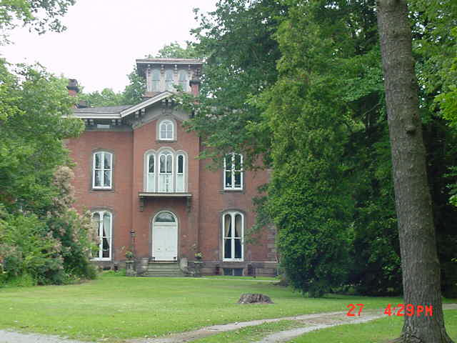

Curtis Mansion

The Curtis Mansion (also known as Round Hill) in Mt. Vernon was home to Henry B. Curtis (1799-1885), a lawyer who helped pick the site for Kenyon College and owned the Curtis House Hotel. He was an Abolitionist who helped slaves along the Underground Railroad by concealing them in his house and, if the rumors are true, in his family's underground crypt at nearby Mound View Cemetery. Subterranean tunnels were said to connect the vault to the mansion's basement.
Today the house is a historical site. The ghost of a child is supposed to haunt it; she can be seen in the windows on occasion.
Back